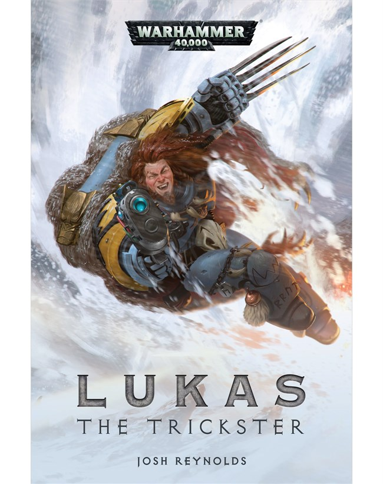

Series
Blood of Asaheim
Schrijver: Chris WraightJaren actief: 2013-2014Aantal boeken: 2
Space Wolves Novel Series
Schrijvers: William King, Lee LightnerJaren actief: 1999-2005Aantal boeken: 6
War Zone: Fenris
Schrijvers: David Annandale, Robbie MacNivenJaar actief: 2016Aantal boeken: 2
boeken
Lukas the Trickster

Schrijver: Josh ReynoldsPublicatiejaar: 2018 Het verhaal: Onder de Space Wolves zijn er evenveel sagen als krijgers. Al lijkt er geen enkele op die van Lukas de Bedriegeer. Geprezen en in gelijke mate beschimpt, de Jakhalswolf was altijd gescheiden van zijn broeders, doorgegeven van roedel tot roedel door verbitterde Wolf Lords. Maar een nieuwe vijand de ijzige planeet Fenris binnenvalt, en Lukas wordt geconfronteerd met een vijand die zelfs zijn legendarische sluwheid kan evenaren: de Drukhari kaper, Hertog Sliscus. Het is een gevecht tussen de wolf en de slang, wie zal overwinnen, en wie zal op rode sneeuw liggen?